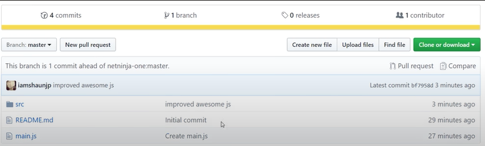
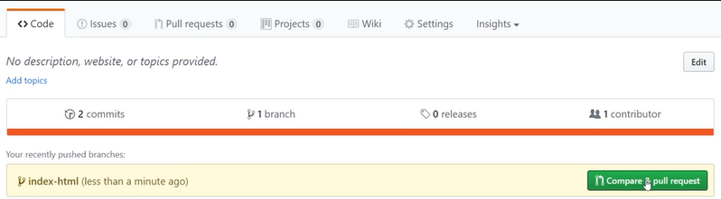
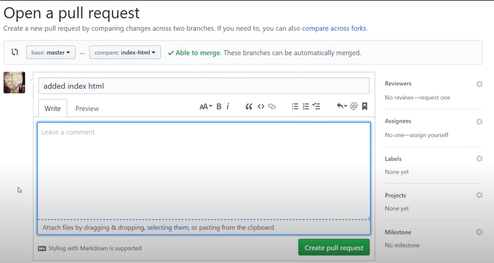
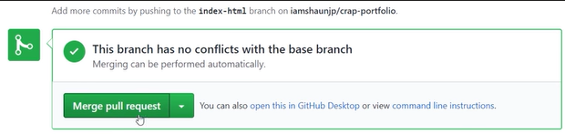

Development Instructions
Running the Project Locally
-
Clone the project into the QGIS plugins folder:
- To locate the folder, open QGIS and navigate to
Settings > User profiles > Open Active Profile Folder. The plugins folder is located within thepython/pluginfolder.
- To locate the folder, open QGIS and navigate to
-
Set up the
QGISDIRenvironment variable:
Point theQGISDIRvariable to the plugins folder. -
Create a Python environment:
Set up and activate a Python environment in your project through the terminal. -
Modify the interface using QT Designer:
- Open the QT Designer installed by QGIS.
- Open the
intelli_geo_dockwidget_base.uifile.- Make modifications.
- Save the file.
-
Compile the interface using
pb_tool:-
Install
pb_toolusing pip:pip install pb-tool -
Install
pyqt5acusing pip:pip install pyqt5ac -
On Linux, due to a known issue, installing Qt via pip may cause incompatibility with QT5. The solution is to install the following packages:
sudo apt-get install python3-pyqt5 sudo apt-get install qtcreator pyqt5-dev-tools sudo apt-get install qttools5-dev-tools -
Verify if
pb_tool.exeis located in the Python environment’s scripts folder. -
Navigate to the
intelli_geomodule folder in the terminal and run:pbt compile
-
-
Activate the plugin in QGIS:
- In QGIS, go to
Plugins > Manage and Install Plugins. - Select the "Installed" tab and check the box next to IntelliGeo.
- Close the plugins manager, and the IntelliGeo menu should appear in the Plugins menu.
- In QGIS, go to
Contributing to the Project - External Contributors
If you want to contribute to the IntelliGeo project but are not part of the team, follow these steps to fork the repository:
-
Go to the IntelliGeo repository on GitHub.
-
In the top-right corner, click Fork. For more information, see the GitHub Forking Guide.

-
Clone the forked repository to your local machine, make changes, and commit them to your forked repository.
-
To propose your changes to the main IntelliGeo repository, create a pull request:
- On your forked repository, click New pull request. 
GitHub will check for merge conflicts, but only the IntelliGeo team can approve or merge changes.
Contributing to the Project - Team Members
-
Pull the latest version of the
mainbranch:git checkout main git pull origin main -
Create a new branch:
git checkout -b <new_branch_name> -
Make your changes.
-
Stage your changes:
git add . -
Commit your changes:
git commit -m "Detailed message about the changes" -
Push the branch for review:
git push origin <new_branch_name> -
On GitHub, you will see the new branch. Use the Compare & pull request button to initiate a pull request with the
mainbranch.  -
In the Open a pull request window, add a description, select reviewers, and click Create pull request. 
-
The team will review the changes. If approved, they will merge the branch into the
mainbranch using the Merge pull request button.  -
Optionally, delete the old branch after merging.
Packaging & Release
The recommended way to package the plugin is by using pb_tool. You can find its documentation at the provided link. Before releasing, you need a ZIP file containing the packaged plugin code.
-
Ensure the version number is properly set in metadata.txt
-
Ensure that all necessary files are listed in the pbtool.config file under the [files] section. This includes:
python_filesfor Python source code,main_dialogandcompiled_ui_filesfor UI files. If you have updated any icons and need to compile them, run:pb_tool compile -
Next, create the ZIP package by running:
pb_tool zipThe generated ZIP file will be located in the zip_build folder.
-
To release you should go to the plugin hub, log in, click on
Add Verionand upload the zip file, remember to add proper changlog.
Tips for development for plugin
I found that reading environmental variable in plugin source code won't work. a work around way is that you can create a txt file named intelligeo_var.txt in your ~Document/QGIS_IntelliGeo/ folder, to store the encironmental variables and read those variables using utils.getIntelligeoEnvVar function. If you want to make sure all interactions from the team will be marked as fromdev = True in backend database, put the following line in the intelligeo_var.txt file.
intelliGeo_fromdev = true
The other important thing is debuging for the pluging is not easy, if you want to show a variable's value, use utils.show_variable_popup.
Documentation
The project's documentation is managed using MkDocs. Documentation is generated from the .md files in the docs folder, with settings configured in mkdocs.yml at the root of the repository.
Testing the Documentation Locally
To test the documentation locally, follow these steps:
- Install the required packages by running:
pip install -U mkdocs mkdocs-material mkdocs-bootswatch mkdocs-ultralytics-plugin
- Navigate to the
IntelliGeofolder, then start the local server with:
mkdocs serve
This will start a local server and make your site available at http://127.0.0.1:8000/. Open this URL in your browser to view the documentation.
Building the Site
The build process is automated via GitHub Actions. You can review the workflow in .github/workflows/deploy.yml.
To check the workflow prior to pushing it on GitHub, we use act.
Development Roadmap
Known Issues & Discussions
IntelliGeo team have noticed that Cohere language models are not very stable and likely to crash when they update backend services. In that sense, we suggest you to use openai when there are problems with Cohere.
If you meet any bug or issue with using our plugin, you can go to our issue list on github repository and check if there are any existing issues, if not you can post a new one. We are a very small team so we can not update the plugin very fast, we will try to react as fast as we can.